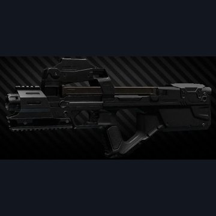
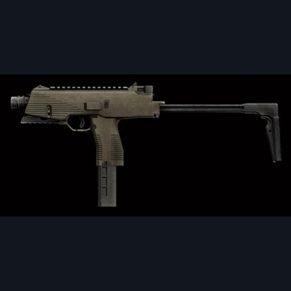
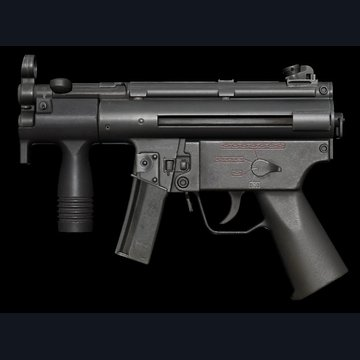
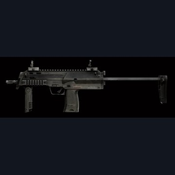
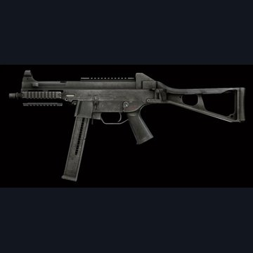
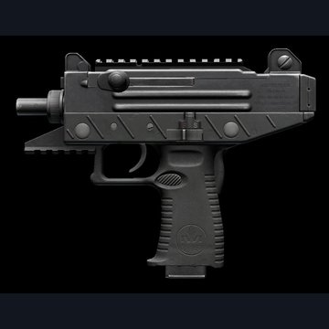
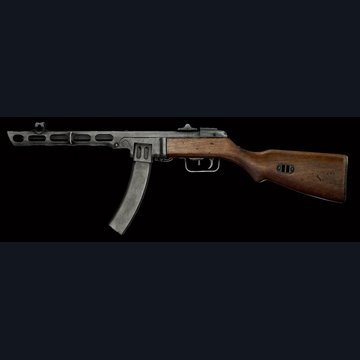
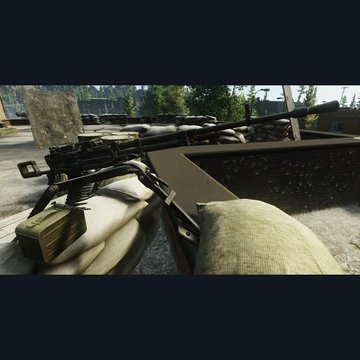
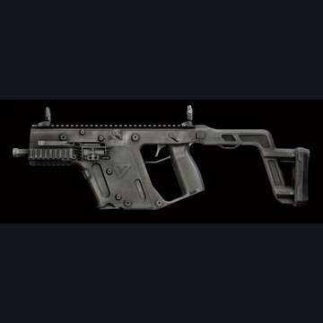
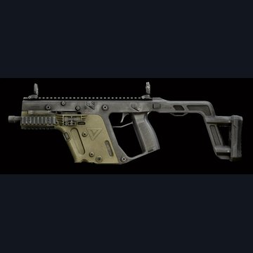

Repères de la famille
Vingt-trois pistolets-mitrailleurs : la famille la plus compacte en nombre d’armes mais la plus homogène en usage. On y trouve des cadences comprises entre 600 et 1 100 coups par minute, des reculs verticaux qui ne dépassent jamais 89, et une distance efficace plafonnée à 500 mètres. Ces armes sont construites pour le corps à corps et pour le tir en mouvement, et les chiffres du catalogue le confirment.
Le prix à payer est la munition : cette famille est la seule où l’on trouve côte à côte le 4,6 x 30 mm, qui traverse largement une classe 4, et le 9 x 19 mm, qui frontalement s’arrête bien plus tôt. Deux armes de la même famille peuvent donc produire deux результата opposés.
42 à 89
Recul vertical. Aucun membre de la famille ne dépasse 89 de recul, contre 210 pour le haut de la famille des fusils d’assaut. C’est le prix de la cadence : l’arme se tient, mais elle consomme la munitions.
600 à 1 100
Cadence. Le haut du classement est tenu par des armes à plus de 1 000 coups par minute. À l’inverse, la carabine Saiga-9 affiche 42 de recul vertical, le plus contenu de la famille.
100 à 500
Distance efficace. La famille ne dépasse jamais 500 mètres : le Soyuz-TM STM-9 Gen. 2 et le SIG MPX sont les plus longs. La distance utile se joue bien en deçà.
Une famille sans vente en magasin. Aucune des vingt-trois armes de cette famille n’a d’offre marchande dans l’instantané : elles s’acquièrent en raid, par tâche, ou au marché. C’est une contrainte de budget réelle, à intégrer dès le départ.
Le catalogue de la famille
Les vingt-trois pistolets-mitrailleurs de l’export, avec leurs mesures à configuration de base.
| Image | Arme | Calibre | Ergonomie | Recul vertical | Recul horizontal | Cadence (c/min) | Distance efficace (m) | Modes de tir | Munitions | Presets |
|---|---|---|---|---|---|---|---|---|---|---|
 | Carabine Saiga-9 9 x 19 mm | 9 x 19 mm Para | 32 | 42 | 246 | 650 | 300 | Semi-automatique | 9 | 1 |
 | Carabine Soyuz-TM STM-9 Gen.2 9 x 19 mm | 9 x 19 mm Para | 50 | 45 | 226 | 800 | 500 | Semi-automatique | 9 | 2 |
 | FN P90 5.7x28 submachine gun (Scourge) | 5,7 x 28 mm | 59 | 57 | 255 | 910 | 200 | Semi-automatique, Automatique | 7 | 1 |
 | Pistolet-mitrailleur B&T MP9 9 x 19 mm | 9 x 19 mm Para | 75 | 54 | 254 | 900 | 200 | Semi-automatique, Automatique | 9 | 1 |
 | Pistolet-mitrailleur B&T MP9-N 9 x 19 mm | 9 x 19 mm Para | 75 | 51 | 254 | 1100 | 200 | Semi-automatique, Automatique | 9 | 2 |
 | Pistolet-mitrailleur FN P90 5,7 x 28 mm | 5,7 x 28 mm | 60 | 54 | 243 | 900 | 200 | Semi-automatique, Automatique | 7 | 5 |
 | Pistolet-mitrailleur HK MP5 9 x 19 mm (navy, rafale 3 coups) | 9 x 19 mm Para | 50 | 56 | 275 | 800 | 200 | Semi-automatique, Burst, Automatique | 9 | 7 |
 | Pistolet-mitrailleur HK MP5K 9 x 19 mm | 9 x 19 mm Para | 55 | 57 | 267 | 900 | 200 | Semi-automatique, Burst, Automatique | 9 | 1 |
 | Pistolet-mitrailleur HK MP7A1 4,6 x 30 mm | 4,6 x 30 mm | 65 | 50 | 178 | 950 | 200 | Semi-automatique, Automatique | 5 | 3 |
 | Pistolet-mitrailleur HK MP7A2 4,6 x 30 mm | 4,6 x 30 mm | 65 | 50 | 178 | 950 | 200 | Semi-automatique, Automatique | 5 | 2 |
 | Pistolet-mitrailleur HK UMP .45 ACP | 11,43 x 23 mm ACP | 62 | 72 | 240 | 600 | 200 | Semi-automatique, Automatique | 5 | 1 |
 | Pistolet-mitrailleur IWI UZI 9 x 19 mm | 9 x 19 mm Para | 65 | 54 | 254 | 600 | 200 | Semi-automatique, Automatique | 9 | 3 |
 | Pistolet-mitrailleur IWI UZI PRO Pistol 9 x 19 mm | 9 x 19 mm Para | 73 | 59 | 203 | 1075 | 100 | Semi-automatique, Automatique | 9 | 3 |
 | Pistolet-mitrailleur IWI UZI PRO SMG 9 x 19 mm | 9 x 19 mm Para | 78 | 56 | 198 | 1075 | 100 | Semi-automatique, Automatique | 9 | 1 |
 | Pistolet-mitrailleur PP-19-01 "Vityaz" 9 x 19 mm | 9 x 19 mm Para | 35 | 58 | 270 | 700 | 200 | Semi-automatique, Automatique | 9 | 5 |
 | Pistolet-mitrailleur PP-9 "Klin" 9 x 18 mm PMM | 9 x 18 mm PMM | 65 | 50 | 211 | 1000 | 100 | Semi-automatique, Automatique | 14 | 1 |
| Pistolet-mitrailleur PP-91 "Kedr" 9 x 18 mm PM | 9 x 18 mm PM | 65 | 50 | 211 | 900 | 100 | Semi-automatique, Automatique | 13 | 1 | |
 | Pistolet-mitrailleur PP-91-01 "Kedr-B" 9 x 18 mm PM | 9 x 18 mm PM | 65 | 50 | 211 | 900 | 100 | Semi-automatique, Automatique | 13 | 1 |
 | Pistolet-mitrailleur PPSh-41 7,62 x 25 mm | 7,62 x 25 mm TT | 16 | 89 | 294 | 1000 | 200 | Semi-automatique, Automatique | 10 | 1 |
 | Pistolet-mitrailleur SIG MPX 9 x 19 mm | 9 x 19 mm Para | 40 | 51 | 269 | 850 | 500 | Semi-automatique, Automatique | 9 | 6 |
 | Pistolet-mitrailleur SR-2M "Veresk" 9 x 21 mm | 9 x 21 mm | 59 | 54 | 234 | 950 | 200 | Semi-automatique, Automatique | 6 | 4 |
 | Pistolet-mitrailleur TDI KRISS Vector Gen.2 .45 ACP | 11,43 x 23 mm ACP | 65 | 59 | 356 | 1100 | 200 | Semi-automatique, Burst, Automatique | 5 | 1 |
 | Pistolet-mitrailleur TDI KRISS Vector Gen.2 9 x 19 mm | 9 x 19 mm Para | 65 | 48 | 315 | 950 | 200 | Semi-automatique, Burst, Automatique | 9 | 1 |
La colonne Munitions recense le nombre de cartouches compatibles dans le catalogue des munitions ; elle ne préjuge ni de leur disponibilité en magasin ni de leur prix.
Presets publiés
Cinquante-quatre presets sont rattachés aux armes de cette famille, dont le preset par défaut de chacune. Les valeurs ci-dessous sont celles de chaque configuration publiée.
| Preset | Ergonomie | Recul vertical | Recul horizontal | Précision (MOA) | État |
|---|---|---|---|---|---|
| Carabine Soyuz-TM STM-9 Gen.2 9 x 19 mm FDB STM-9Carabine Soyuz-TM STM-9 Gen.2 9 x 19 mm | 81 | 30 | 149 | 4.13 | preset publié |
| Pistolet-mitrailleur B&T MP9-N 9 x 19 mm ACRO P-1Pistolet-mitrailleur B&T MP9-N 9 x 19 mm | 74.35 | 43 | 213 | 7.22 | preset publié |
| Pistolet-mitrailleur FN P90 5,7 x 28 mm CWDGPistolet-mitrailleur FN P90 5,7 x 28 mm | 66.4 | 44 | 199 | 12.72 | preset publié |
| Pistolet-mitrailleur FN P90 5,7 x 28 mm DEVGRUPistolet-mitrailleur FN P90 5,7 x 28 mm | 65.9 | 43 | 194 | 12.72 | preset publié |
| Pistolet-mitrailleur FN P90 5,7 x 28 mm SBRPistolet-mitrailleur FN P90 5,7 x 28 mm | 64.4 | 42 | 187 | 9.9 | preset publié |
| Pistolet-mitrailleur FN P90 5,7 x 28 mm SBRTPistolet-mitrailleur FN P90 5,7 x 28 mm | 70 | 40 | 182 | 9.9 | preset publié |
| Pistolet-mitrailleur HK MP5 9 x 19 mm (navy, rafale 3 coups) MRSPistolet-mitrailleur HK MP5 9 x 19 mm (navy, rafale 3 coups) | 77 | 43 | 209 | 6.89 | preset publié |
| Pistolet-mitrailleur HK MP5 9 x 19 mm (navy, rafale 3 coups) PROPistolet-mitrailleur HK MP5 9 x 19 mm (navy, rafale 3 coups) | 65 | 39 | 190 | 6.89 | preset publié |
| Pistolet-mitrailleur HK MP5 9 x 19 mm (navy, rafale 3 coups) PROPistolet-mitrailleur HK MP5 9 x 19 mm (navy, rafale 3 coups) | 65 | 39 | 190 | 6.89 | preset publié |
| Pistolet-mitrailleur HK MP5 9 x 19 mm (navy, rafale 3 coups) SDPistolet-mitrailleur HK MP5 9 x 19 mm (navy, rafale 3 coups) | 67 | 39 | 190 | 6.89 | preset publié |
| Pistolet-mitrailleur HK MP5 9 x 19 mm (navy, rafale 3 coups) SD SpecPistolet-mitrailleur HK MP5 9 x 19 mm (navy, rafale 3 coups) | 70 | 42 | 205 | 6.89 | preset publié |
| Pistolet-mitrailleur HK MP5 9 x 19 mm (navy, rafale 3 coups) XPS3-0Pistolet-mitrailleur HK MP5 9 x 19 mm (navy, rafale 3 coups) | 63 | 39 | 190 | 6.89 | preset publié |
| Pistolet-mitrailleur HK MP7A1 4,6 x 30 mm SEALSPistolet-mitrailleur HK MP7A1 4,6 x 30 mm | 47.4 | 39 | 140 | 8.6 | preset publié |
| Pistolet-mitrailleur HK MP7A1 4,6 x 30 mm WedgePistolet-mitrailleur HK MP7A1 4,6 x 30 mm | 60.9 | 42 | 149 | 8.6 | preset publié |
| Pistolet-mitrailleur HK MP7A2 4,6 x 30 mm T-1Pistolet-mitrailleur HK MP7A2 4,6 x 30 mm | 51.5 | 39 | 138 | 8.6 | preset publié |
| Pistolet-mitrailleur IWI UZI 9 x 19 mm P1x42Pistolet-mitrailleur IWI UZI 9 x 19 mm | 69 | 36 | 171 | 11.62 | preset publié |
| Pistolet-mitrailleur IWI UZI 9 x 19 mm SDPistolet-mitrailleur IWI UZI 9 x 19 mm | 84 | 38 | 179 | 11.62 | preset publié |
| Pistolet-mitrailleur IWI UZI PRO Pistol 9 x 19 mm BOSS XePistolet-mitrailleur IWI UZI PRO Pistol 9 x 19 mm | 80 | 47 | 160 | 11.86 | preset publié |
| Pistolet-mitrailleur IWI UZI PRO Pistol 9 x 19 mm EXPS3Pistolet-mitrailleur IWI UZI PRO Pistol 9 x 19 mm | 82.5 | 42 | 145 | 11.86 | preset publié |
| Pistolet-mitrailleur PP-19-01 "Vityaz" 9 x 19 mm FSBPistolet-mitrailleur PP-19-01 "Vityaz" 9 x 19 mm | 52.5 | 41 | 192 | 4.47 | preset publié |
| Pistolet-mitrailleur PP-19-01 "Vityaz" 9 x 19 mm KibaPistolet-mitrailleur PP-19-01 "Vityaz" 9 x 19 mm | 69.4 | 41 | 193 | 4.47 | preset publié |
| Pistolet-mitrailleur PP-19-01 "Vityaz" 9 x 19 mm OKP-7 QAPistolet-mitrailleur PP-19-01 "Vityaz" 9 x 19 mm | 56.5 | 41 | 189 | 4.47 | preset publié |
| Pistolet-mitrailleur PP-19-01 "Vityaz" 9 x 19 mm ZenitPistolet-mitrailleur PP-19-01 "Vityaz" 9 x 19 mm | 58.5 | 41 | 190 | 4.47 | preset publié |
| Pistolet-mitrailleur SIG MPX 9 x 19 mm Illusion 9Pistolet-mitrailleur SIG MPX 9 x 19 mm | 51.7 | 34 | 182 | 1.38 | preset publié |
| Pistolet-mitrailleur SIG MPX 9 x 19 mm MQBPistolet-mitrailleur SIG MPX 9 x 19 mm | 79.75 | 36 | 188 | 6.19 | preset publié |
| Pistolet-mitrailleur SIG MPX 9 x 19 mm PDW Gen.2Pistolet-mitrailleur SIG MPX 9 x 19 mm | 72 | 39 | 205 | 8.6 | preset publié |
| Pistolet-mitrailleur SIG MPX 9 x 19 mm ROMEO8TPistolet-mitrailleur SIG MPX 9 x 19 mm | 50.4 | 35 | 185 | 1.38 | preset publié |
| Pistolet-mitrailleur SIG MPX 9 x 19 mm SilencéPistolet-mitrailleur SIG MPX 9 x 19 mm | 65.75 | 37 | 193 | 6.19 | preset publié |
| Pistolet-mitrailleur SR-2M "Veresk" 9 x 21 mm FSBPistolet-mitrailleur SR-2M "Veresk" 9 x 21 mm | 65 | 41 | 176 | 7.91 | preset publié |
| Pistolet-mitrailleur SR-2M "Veresk" 9 x 21 mm SV-1381Pistolet-mitrailleur SR-2M "Veresk" 9 x 21 mm | 65.4 | 41 | 176 | 7.91 | preset publié |
| Pistolet-mitrailleur SR-2M "Veresk" 9 x 21 mm TACPistolet-mitrailleur SR-2M "Veresk" 9 x 21 mm | 66 | 41 | 176 | 7.91 | preset publié |
La précision en minutes d’angle est mesurée sur la configuration du preset. Rapprochez-la de la distance à laquelle vous comptez tirer : une précision correcte à 50 mètres ne l’est pas à 200.
Acquisition et disponibilité
Aucune arme de cette famille n’est vendue en magasin dans l’instantané du 18 novembre 2026. Le tableau d’acquisition est donc vide, et c’est une information en soi : le budget consacré à cette famille part en totalité dans l’achat de cartouches au marché, quand elle n’est pas couverte par une tâche.
Aucune vente en magasin relevée pour cette famille dans l’instantané consulté.
Ce que cela change en pratique. Une arme qu’on ne peut pas acheter se récupère une fois, ou pas. Les pièces, en revanche, restent disponibles et se montent sur ces armes comme sur les autres : c’est par là qu’on fait progresser une configuration de la famille.
Comment s’équiper
- Le 4,6 x 30 mm est l’exception de la famille. Le HK MP7A1 et le MP7A2 sont les deux seules armes en 4,6 x 30 mm du catalogue : leur cartouche est la plus pénétrante du jeu et leur permet de marquer des armures de classe 4. Si la famille est choisie pour cela, l’arme est imposée.
- Le 9 x 19 mm domine, en volume et en polyvalence. Seize des vingt-trois armes de la famille sont en 9 x 19 mm Para. La cartouche de cette calibre est bon marché, disponible chez les marchands et en quantité : c’est le réflexe de munition de secours.
- Regarder la cadence avant le nom. Entre une arme à 600 coups par minute et une autre à 1 100, l’écart de volume de feu est presque double. Le recul, lui, varie peu : la famille est stable, c’est la consommation de munitions qui varie.
Sources et limites
Les chiffres viennent de l’export communautaire du 18 novembre 2026. Les retours de forums sur le rapport cadence-récurrence de cette famille sont des opinions de joueurs, jamais des données : seuls les chiffres publiés par l’export sont repris ici.
- Tarkov.dev — catalogue des armes et de leurs presetsDonnées communautaires
- Tarkov.dev — items, équipement, munitions et skills (PvP ; autres modes via le catalogue)Données communautaires
- Tarkov.dev — catalogue officiel des exports JSONDonnées communautaires
- Escape from Tarkov WikiWiki communautaire
- KappaGuide — outils, cartes et guidesOutil communautaire